Berikut format Markdown (.md) yang sesuai dengan notebook dan setiap bagian dipisahkan berdasarkan # %%. Kode ditampilkan menggunakan blok ```python dan diikuti penjelasan singkat.
1. Pengambilan Data NO₂ dari Sentinel-5P Menggunakan OpenEO#
Pada tahap ini dilakukan koneksi ke platform OpenEO Copernicus Data Space, menentukan Area of Interest (AOI) Kabupaten Sampang, kemudian mengambil data konsentrasi NO₂ dari citra Sentinel-5P.
import openeo
connection = openeo.connect("openeo.dataspace.copernicus.eu").authenticate_oidc()
aoi = {
"type": "Polygon",
"coordinates": [
[
[113.10667278468316, -6.894703381663803],
[113.44564973592355, -6.894699878993563],
[113.44566123252753, -7.207692127698621],
[113.10663374095788, -7.207699308529428],
[113.10667278468316, -6.894703381663803]
]
]
}
s5post = connection.load_collection(
"SENTINEL_5P_L2",
temporal_extent=["2023-10-01", "2026-06-03"],
spatial_extent={
"west": 113.10,
"south": -7.21,
"east": 113.45,
"north": -6.89
},
bands=["NO2"],
)
job = s5post.execute_batch(
title="NO2 in sampang",
outputfile="NO2sampang.nc"
)
s5p_no2_daily = s5post.aggregate_temporal_period(
reducer="mean",
period="day"
)
s5p_no2_aoi = s5p_no2_daily.aggregate_spatial(
reducer="mean",
geometries=aoi
)
Penjelasan:
Melakukan autentikasi ke OpenEO.
Mendefinisikan wilayah penelitian menggunakan polygon koordinat Kabupaten Sampang.
Mengambil data Sentinel-5P Level 2 dengan band NO₂.
Mengunduh hasil dalam format NetCDF (
.nc).Melakukan agregasi temporal harian menggunakan nilai rata-rata.
Melakukan agregasi spasial sehingga diperoleh rata-rata NO₂ pada wilayah penelitian.
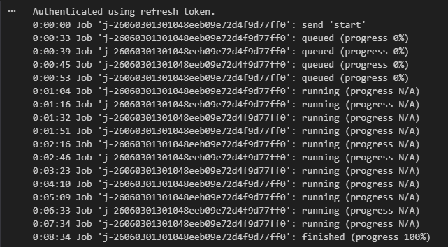
#2. Membaca dan Memeriksa Struktur Data NetCDF#
Tahap ini bertujuan untuk melihat struktur data hasil unduhan dan memastikan variabel yang tersedia dapat digunakan pada proses berikutnya.
import netCDF4
file_path = "data/NO2sampang.nc"
ds = netCDF4.Dataset(file_path)
print("📦 Variabel dalam file:")
print(ds.variables.keys())
no2 = ds.variables["NO2"][:]
time = ds.variables["t"][:]
try:
time_units = ds.variables["t"].units
dates = netCDF4.num2date(time, units=time_units)
except Exception:
dates = time
print(type(no2))
print(len(no2))
print(len(no2[0]))
print(len(no2[0][0]))
print(no2[0][0][0])
print("Contoh data pertama:")
for i in range(0, 10):
print(no2[i])
Penjelasan:
Membuka file NetCDF hasil unduhan.
Menampilkan seluruh variabel yang tersedia.
Mengambil data NO₂ dan waktu pengamatan.
Mengonversi waktu menjadi format tanggal.
Mengecek bentuk dan dimensi data.
Menampilkan beberapa contoh data untuk proses eksplorasi awal.
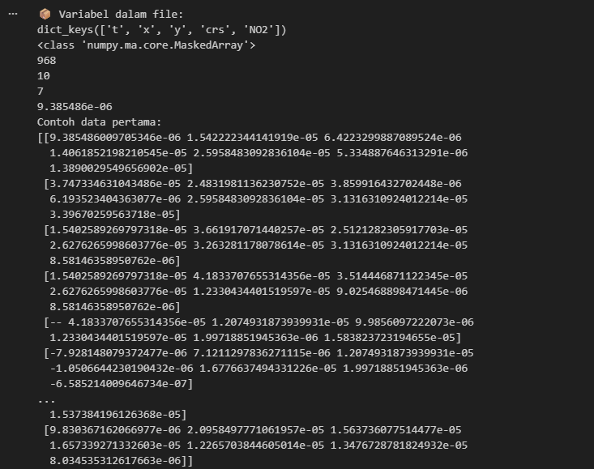
#3. Menangani Missing Value dan Membuat Time Series#
Tahap ini digunakan untuk mengisi data yang hilang menggunakan interpolasi linear dan mengubah data grid menjadi satu nilai rata-rata harian.
import numpy as np
import pandas as pd
no2_filled = np.zeros_like(no2)
no2_filled = no2_filled.filled(0)
for i in range(no2.shape[1]):
for j in range(no2.shape[2]):
series = pd.Series(no2[:, i, j])
no2_filled[:, i, j] = series.interpolate(
method='linear',
limit_direction='both'
).to_numpy()
new_dates = []
new_no2 = []
for i in range(len(dates)):
new_date = dates[i].strftime('%Y-%m-%d')
new_dates.append(new_date)
new_no2.append(np.mean(no2_filled[i]))
df = pd.DataFrame({
"date": dates,
"NO2": new_no2
})
df.to_csv("NO2_Sampang_timeseries.csv", index=False)
Penjelasan:
Mengisi nilai kosong pada setiap grid menggunakan interpolasi linear.
Menghitung rata-rata seluruh grid pada setiap tanggal.
Mengubah data spasial menjadi data time series.
Menyimpan hasil ke file CSV.
#
4. Memeriksa Tanggal yang Hilang#
Tahap ini dilakukan untuk mengetahui apakah terdapat tanggal yang tidak memiliki data pengamatan.
import pandas as pd
import numpy as np
df = pd.read_csv("NO2_Sampang_timeseries.csv")
df['date'] = pd.to_datetime(df['date'])
start_date = "2023-10-01"
end_date = "2026-06-03"
full_range = pd.date_range(
start=start_date,
end=end_date,
freq='D'
)
missing_dates = full_range.difference(df['date'])
print(f"Jumlah hari missing: {len(missing_dates)}")
print("Daftar tanggal missing:")
print(missing_dates)
Penjelasan:
Membuat rentang tanggal lengkap.
Membandingkan tanggal pada dataset dengan rentang tanggal yang seharusnya ada.
Menampilkan jumlah dan daftar tanggal yang hilang.
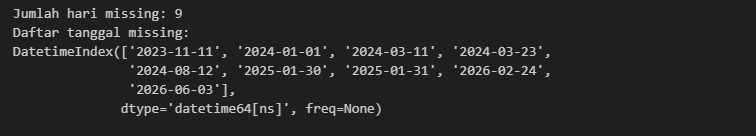
#5. Melengkapi Missing Date Menggunakan Interpolasi Waktu#
Tahap ini digunakan untuk mengisi tanggal yang hilang sehingga data menjadi kontinu.
import pandas as pd
df['date'] = pd.to_datetime(df['date'], errors='coerce')
df = df.dropna(subset=['date'])
df = df.groupby('date', as_index=False)['NO2'].mean()
df = df.sort_values('date')
full_range = pd.date_range(
start="2023-10-01",
end="2026-06-03",
freq='D'
)
df = df.set_index('date').reindex(full_range)
df.index.name = 'date'
df['NO2'] = df['NO2'].interpolate(method='time')
df['NO2'] = df['NO2'].fillna(method='bfill').fillna(method='ffill')
df.to_csv("no2_timeseries_interpolated_sampang.csv")
Penjelasan:
Mengurutkan data berdasarkan tanggal.
Membuat indeks tanggal lengkap.
Mengisi tanggal yang hilang menggunakan interpolasi berbasis waktu.
Menyimpan hasil interpolasi ke file baru.
6. Verifikasi Hasil Interpolasi#
Tahap ini digunakan untuk memastikan tidak ada tanggal yang hilang setelah proses interpolasi.
import pandas as pd
import numpy as np
df = pd.read_csv("no2_timeseries_interpolated_sampang.csv")
df['date'] = pd.to_datetime(df['date'], errors='coerce')
start_date = "2023-10-01"
end_date = "2025-09-30"
full_range = pd.date_range(
start=start_date,
end=end_date,
freq='D'
)
missing_dates = full_range.difference(df['date'])
print(f"Jumlah hari missing: {len(missing_dates)}")
print("Daftar tanggal missing:")
print(missing_dates)
Penjelasan:
Melakukan pengecekan ulang setelah interpolasi.
Memastikan seluruh tanggal telah tersedia.
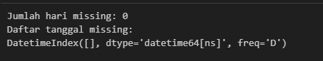
#7. Deteksi Outlier Menggunakan Metode IQR#
Tahap ini bertujuan untuk mengidentifikasi nilai NO₂ yang dianggap tidak normal.
import pandas as pd
import numpy as np
import matplotlib.pyplot as plt
df = pd.read_csv("no2_timeseries_interpolated_sampang.csv")
df['date'] = pd.to_datetime(df['date'])
Q1 = df['NO2'].quantile(0.25)
Q3 = df['NO2'].quantile(0.75)
IQR = Q3 - Q1
lower_bound = Q1 - 1.5 * IQR
upper_bound = Q3 + 1.5 * IQR
outliers_iqr = df[
(df['NO2'] < lower_bound) |
(df['NO2'] > upper_bound)
]
print("Jumlah Outlier (IQR):", len(outliers_iqr))
print(outliers_iqr[['date', 'NO2']].head())
Penjelasan:
Menghitung Q1, Q3, dan IQR.
Menentukan batas bawah dan batas atas outlier.
Mengidentifikasi data yang berada di luar rentang normal.
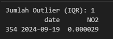
#8. Visualisasi Outlier#
plt.figure(figsize=(15,5))
plt.plot(df['date'], df['NO2'], label="NO2")
plt.scatter(
outliers_iqr['date'],
outliers_iqr['NO2'],
label="Outliers"
)
plt.axhline(
upper_bound,
linestyle='dashed'
)
plt.axhline(
lower_bound,
linestyle='dashed'
)
plt.show()
Penjelasan:
Menampilkan grafik time series NO₂.
Menandai posisi outlier.
Menampilkan batas bawah dan batas atas metode IQR.
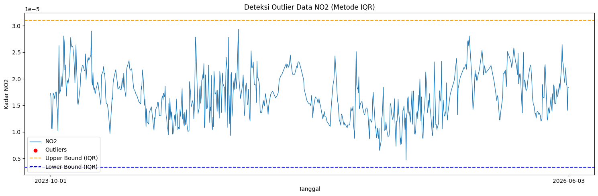
#9. Menghapus Outlier dan Mengisi Kembali Nilainya#
df['NO2_cleaned'] = df['NO2'].mask(
(df['NO2'] < lower_bound) |
(df['NO2'] > upper_bound)
)
df['NO2_filled'] = df['NO2_cleaned'].interpolate(
method='linear'
)
df['NO2_filled'] = (
df['NO2_filled']
.bfill()
.ffill()
)
print(
"Jumlah missing setelah interpolasi:",
df['NO2_filled'].isna().sum()
)
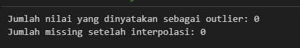
Penjelasan:Mengubah outlier menjadi NaN.
Mengisi kembali menggunakan interpolasi linear.
Memastikan tidak ada nilai kosong tersisa.
10. Visualisasi Data Setelah Pembersihan#
plt.figure(figsize=(15,5))
plt.plot(
df['date'],
df['NO2_filled'],
label="NO2 (Interpolated)"
)
plt.show()
Penjelasan:
Menampilkan data NO₂ setelah outlier dihapus dan diperbaiki.
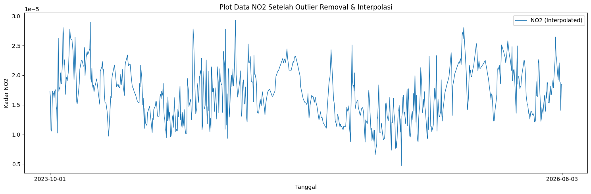
#11. Normalisasi Data#
from sklearn.preprocessing import MinMaxScaler
import pandas as pd
scaler = MinMaxScaler()
df['NO2_scaled'] = scaler.fit_transform(
df[['NO2']]
)
Penjelasan:
Mengubah rentang data menjadi 0–1 menggunakan MinMaxScaler.
Normalisasi dilakukan agar model KNN bekerja lebih optimal.
12. Uji Korelasi Lag Time Series#
import pandas as pd
def create_supervised(data, n_lag=4):
df_supervised = pd.DataFrame()
for i in range(n_lag, 0, -1):
df_supervised[f'NO2(t-{i})'] = data.shift(i)
df_supervised['NO2(t)'] = data
df_supervised.dropna(inplace=True)
return df_supervised
supervised_df30 = create_supervised(
df['NO2_scaled'],
n_lag=30
)
lag_cols = supervised_df30.drop(
columns="NO2(t)"
).columns
correlations = supervised_df30[
lag_cols
].corrwith(
supervised_df30['NO2(t)']
)
print(correlations)
Penjelasan:
Mengubah data time series menjadi supervised learning.
Menghitung korelasi antara data masa lalu dan target saat ini.
Digunakan untuk menentukan jumlah lag yang relevan.
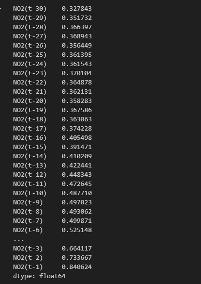
#13. Membentuk Dataset Lag 4 Hari#
supervised_df = create_supervised(
df['NO2_scaled'],
n_lag=4
)
print(supervised_df)
print(supervised_df.shape)
Penjelasan:
Menggunakan empat hari sebelumnya sebagai fitur prediksi.
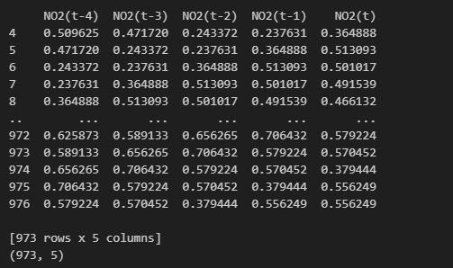
#14. Membentuk Dataset Lag 10 Hari#
supervised_df10 = create_supervised(
df['NO2_scaled'],
n_lag=10
)
print(supervised_df10)
print(supervised_df10.shape)
Penjelasan:
Menggunakan sepuluh hari sebelumnya sebagai fitur prediksi.
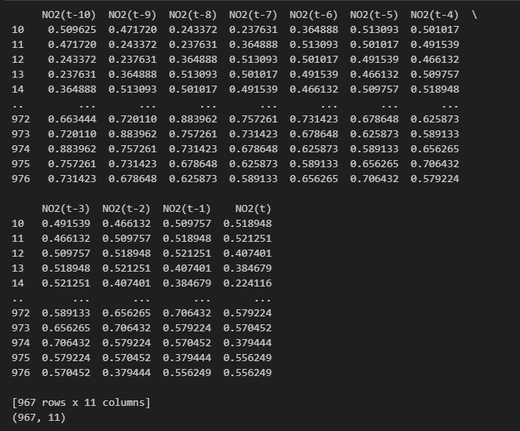
#15. Membentuk Dataset Lag 30 Hari#
supervised_df30 = create_supervised(
df['NO2_scaled'],
n_lag=30
)
print(supervised_df30)
print(supervised_df30.shape)
Penjelasan:
Menggunakan tiga puluh hari sebelumnya sebagai fitur prediksi.
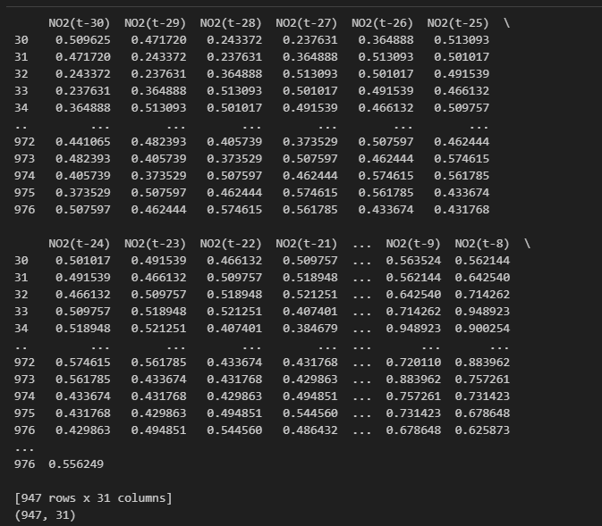
#16. Pemodelan dan Evaluasi Menggunakan KNN Regression#
from sklearn.neighbors import KNeighborsRegressor
from sklearn.model_selection import train_test_split
from sklearn.metrics import mean_squared_error, r2_score
import numpy as np
# Seluruh fungsi MAPE dan train_knn
# sesuai kode program
knn_4, y_test_4, y_pred_4 = train_knn(
supervised_df,
"KNN - 4 Hari Sebelumnya"
)
knn_10, y_test_10, y_pred_10 = train_knn(
supervised_df10,
"KNN - 10 Hari Sebelumnya"
)
knn_30, y_test_30, y_pred_30 = train_knn(
supervised_df30,
"KNN - 30 Hari Sebelumnya"
)
Penjelasan:
Membagi data menjadi data latih dan data uji.
Melatih model KNN Regression.
Mengukur performa menggunakan RMSE, R² Score, dan MAPE.
Membandingkan performa model dengan lag 4, 10, dan 30 hari.
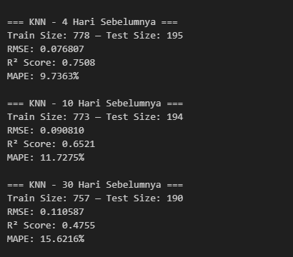
#17. Visualisasi Hasil Prediksi Lag 4 Hari#
plt.figure()
plt.plot(y_test_4, label="Actual")
plt.plot(y_pred_4, label="Predicted")
plt.title("KNN Regression - 4 Hari Sebelumnya")
plt.legend()
plt.show()
Penjelasan:
Membandingkan nilai aktual dan hasil prediksi pada model lag 4 hari.
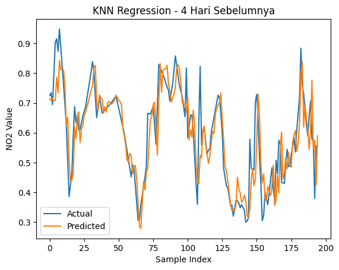
18. Visualisasi Hasil Prediksi Lag 10 Hari#
plt.figure()
plt.plot(y_test_10, label="Actual")
plt.plot(y_pred_10, label="Predicted")
plt.title("KNN Regression - 10 Hari Sebelumnya")
plt.legend()
plt.show()
Penjelasan:
Menampilkan perbandingan hasil aktual dan prediksi untuk lag 10 hari.
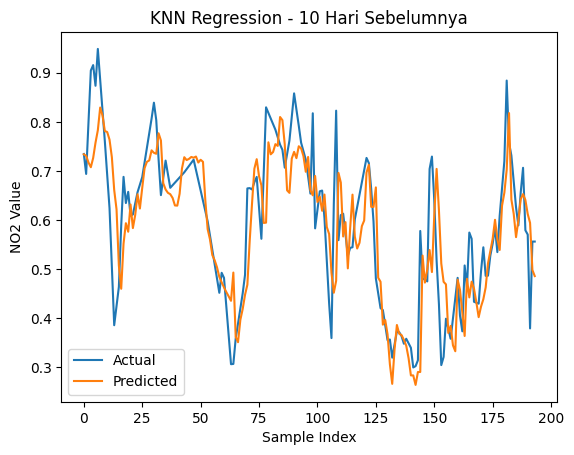
19. Visualisasi Hasil Prediksi Lag 30 Hari#
plt.figure()
plt.plot(y_test_30, label="Actual")
plt.plot(y_pred_30, label="Predicted")
plt.title("KNN Regression - 30 Hari Sebelumnya")
plt.legend()
plt.show()
Penjelasan:
Menampilkan hasil prediksi menggunakan 30 hari sebelumnya sebagai fitur masukan.
Digunakan untuk membandingkan performa model dengan jumlah lag yang berbeda.
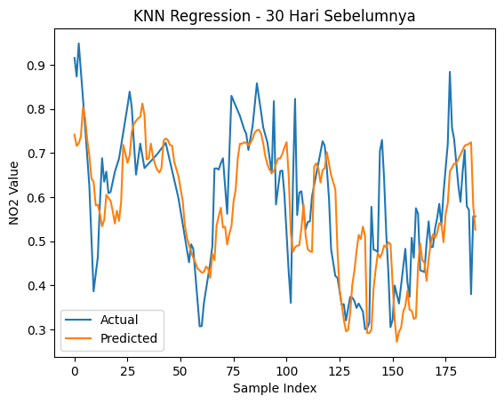